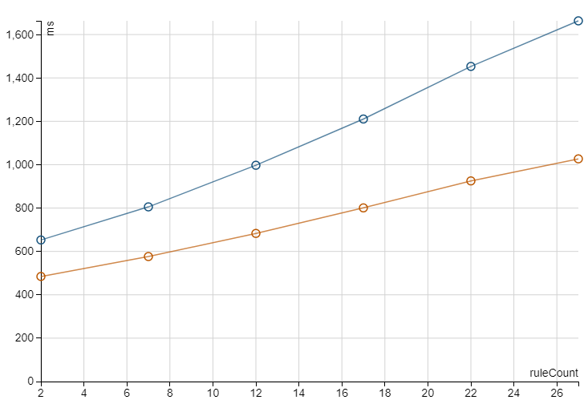

User Defined Functions
Users may register Lambda Functions using the sql lambda syntax:
val rule = LambdaFunction("multValCCY", "(theValue, ccy) -> theValue * ccy", Id(1,2))
registerLambdaFunctions(Seq(rule))
val ndf = df.withColumn("newcalc", expr("multValCCY(value, ccyrate)"))
Note
Whilst you are free to add lambdas when not using a RuleSuite the library will not ensure that only functions registered as part of a RuleSuite are used in rules, such hygiene is necessarily left to the user.
LambdaFunctions may have any number of parameters e.g. given a greaterThan lambda:
(param1, param2) -> param1 > param2
greaterThan(col1, col2)
Single argument lambdas should not use brackets around the parameters and zero argument lambdas use no input or ->. In all cases the lambda can use the attributes from the surrounding dataframe - it's effectively global, you cannot use variables from surrounding / calling lambdas.
Don't use 'current'… as a lambda variable name on 2.4
Bizarrely this causes the parser to fail on 2.4 only, no more recent version suffers this. Same goes for left or right as names.
What about default parameter or different length parameter length Lambdas?¶
To define multiple parameter length lambdas just define new lambdas with the same name but different argument lengths. You can freely call the same lambda name with different parameters e.g.:
val rule = LambdaFunction("multValCCY", "multValCCY(value, ccyrate)", Id(1,2))
val rule1 = LambdaFunction("multValCCY", "theValue -> multValCCY(theValue, ccyrate)", Id(2,2))
val rule2 = LambdaFunction("multValCCY", "(theValue, ccy) -> theValue * ccy", Id(3,2))
registerLambdaFunctions(Seq(rule, rule1, rule2))
// all of these should work
df.withColumn("newcalc", expr("multValCCY()"))
df.withColumn("newcalc", expr("multValCCY(value)"))
df.withColumn("newcalc", expr("multValCCY(value, ccyrate)"))
Higher Order Functions¶
As Lambda's in Spark aren't first class citizens you can neither partially apply them (fill in parameters to derive new lambdas) nor pass them into a lambda.
In 0.7.1 Quality experimentally adds three new concepts to the mix:
- Placeholders -
_()- which represents a value which still needs to be filled (partial application) - Application -
callFun()- which, in a lambda, allows you to apply a function parameter - Lambda Extraction -
_lambda_()- which allows Lambdas to be used with existing Spark HigherOrderFunctions (like aggregate)
Unfortunately the last piece of that puzzle of returning a higher order function isn't currently possible.
Putting together 1 and 3 (straight out of the test suite):
val plus = LambdaFunction("plus", "(a, b) -> a + b", Id(1,2))
val plus3 = LambdaFunction("plus3", "(a, b, c) -> a + b + c", Id(2,2))
val hof = LambdaFunction("hof", "func -> aggregate(array(1, 2, 3), 0, _lambda_(func))", Id(3,2))
registerLambdaFunctions(Seq(plus, plus3, hof))
import sparkSession.implicits._
// attempt to dropping a reference to a function where simple lambdas are expected.
// control
assert(6 == sparkSession.sql("SELECT aggregate(array(1, 2, 3), 0, (acc, x) -> acc + x) as res").as[Int].head)
// all params would be needed with multiple aritys
assert(6 == sparkSession.sql("SELECT aggregate(array(1, 2, 3), 0, _lambda_(plus(_('int'), _('int')))) as res").as[Int].head)
// can we play with partials?
assert(21 == sparkSession.sql("SELECT aggregate(array(1, 2, 3), 0, _lambda_(plus3(_('int'), _('int'), 5))) as res").as[Int].head)
// hof'd
assert(6 == sparkSession.sql("SELECT hof(plus(_('int'), _('int'))) as res").as[Int].head)
In the above example you can see type's being specified to the placeholder function, this is needed because, similar to aggExpr, Spark can't know the types until after they are evaluated and resolved. This does have the benefit of keeping the types at the partial application site. The default placeholder type is Long / Bigint.
The lambda function extracts a fully resolved underlying Spark LambdaFunction, which means the types must be correct as it is provided to the function (use the placeholder function to specify types). Similarly, you use the lambda function to extract the Spark LambdaFunction from a user provided parameter (as seen in the hof example).
The aggregate function only accepts two parameters for its accumulator, but in the plus3 example we've 'injected' in a third. Partially applying the plus3 with the value 5 in it's "c" position leaves the two arguments as new function. Quality ensures the necessary transformations are done before it hits the aggregate expression.
Great, but can I use it with aggExpr? Yep:
select aggExpr('DECIMAL(38,18)', dec IS NOT NULL, myinc(_()), myretsum(_(), _())) as agg
allows you to define the myinc and myretsum elsewhere, you don't need to use the lambda function with aggExpr.
What about application? Using callFun:
val use = LambdaFunction("use", "(func, b) -> callFun(func, b)", Id(4,2))
the first parameter must be the lambda variable referring to your function followed by the necessary parameters to pass in. Func in this case has a single parameter but of course it could have started with 5 and had 4 partially applied. Again you don't need to use lambda to pass the functions further down the line:
val deep = LambdaFunction("deep", "(func, a, b) -> use(func, a, b)", Id(2,2))
Deep takes the function and simply passes it to use where the callFun exists.
Finally you can also further partially apply your lambda variables:
val plus2 = LambdaFunction("plus", "(a, b) -> a + b", Id(3,2))
val plus3 = LambdaFunction("plus", "(a, b, c) -> plus(plus(a, b), c)", Id(3,2))
val papplyt = LambdaFunction("papplyt", "(func, a, b, c) -> callFun(callFun(func, _(), _(), c), a, b)", Id(2,2))
registerLambdaFunctions(Seq(plus2, plus3, papplyt))
import sparkSession.implicits._
assert(6L == sparkSession.sql("select papplyt(plus(_(), _(), _()), 1L, 2L, 3L) as res").as[Long].head)
Here the callFun directly applies the function afterwards but you could equally pass it to other functions.
callFun(callFun(func, _(), _(), c), a, b)
can then be read as partially apply func (plus with 3 arguments) parameter 3 with the lambda variable c, creating a new two argument function. Then call that function with the a and b parameters. Useless in this case perhaps but it should be illustrative.
All that's missing is returning lambdas:
val plus2 = LambdaFunction("plus", "(a, b) -> a + b", Id(3,2))
val plus3 = LambdaFunction("plus", "(a, b, c) -> plus(plus(a, b), c)", Id(3,2))
val retLambda = LambdaFunction("retLambda", "(a, b) -> plus(a, b, _())", Id(2,2))
registerLambdaFunctions(Seq(plus2, plus3, retLambda))
import sparkSession.implicits._
assert(6L == { val sql = sparkSession.sql("select callFun(retLambda(1L, 2L), 3L) as res")
sql.as[Long].head})
here the user function retLambda returns the plus with 3 arity applied over a and b, leaving a function of one arity to fill. The top level callFun then applies the last argument (c).
The second test
It is experimental
Although behaviour has been tested with compilation and across the support DBRs it's entirely possible there are gaps in the trickery used.
A good example of the experimental nature is the _() function, it's quite possible that is taken by Spark at a later stage.
lambda drop in call arguments to transform_values and transform_keys don't work on 3.0 and 3.1.2/3
They pattern match on List and not seq, later versions fix this. To work around this you must explicitly use lambdas for these functions.
Controlling compilation - Tweaking the Quality Optimisations¶
Normal Spark LambdaFunctions, NamedLambdaVariable and HigherOrderFunctions aren't compiled, this is - in part - due to the nature of having to thread the lambda variables across the Expression tree and calling bind.
At the time of codegen bind has already been called however so the code is free to create a new tree just for compilation. Quality makes use of this and replaces all NamedLambdaVariables expressions with a simple variable in the generated code.
NamedLambdaVariables also use AtomicReferences, which was introduced to avoid a tree manipulation task - see here for the code introduction. AtomicReferences are slower for both writes and reads of non-contended variables. As such Quality does away with this in its compilation, the exprId is sufficient to track the actual id.
Quality only attempts to replace it's own FunN and reverts to using NamedLambdaVariables if it encounters any other HigherOrderFunction. Where it can replace it uses NamedLambdaVariableCodeGen with an ExprId specific code snippet.
You can customise this logic via implementing:
trait LambdaCompilationHandler {
/**
*
* @param expr
* @return empty if the expression should be transformed (i.e. there is a custom solution for it). Otherwise return the full set of NamedLambdaVariables found
*/
def shouldTransform(expr: Expression): Seq[NamedLambdaVariable]
/**
* Transform the expression using the scope of replaceable named lambda variable expression
* @param expr
* @param scope
* @return
*/
def transform(expr: Expression, scope: Map[ExprId, NamedLambdaVariableCodeGen]): Expression
}
and supplying it via the environment variable, System.property or via sparkSession.sparkContext.setLocalProperty quality.lambdaHandlers using this format:
name=className
where name is either a fully qualified class name of a HigherOrderFunction or of a lambda (FunN) function.
The default org.apache.spark.sql.qualityFunctions.DoCodegenFallbackHandler allows you to disable any optimisation for a HigherOrderFunction. It can be used to disable all FunN optimisations with:
-Dquality.lambdaHandlers=org.apache.spark.sql.qualityFunctions.FunN=org.apache.spark.sql.qualityFunctions.DoCodegenFallbackHandler
Alternatively if you have a hotspot with any inbuilt HoF such as array_transform, filter or transform_values you could replace the implementation for compilation with your own transformation. e.g.:
-Dquality.lambdaHandlers=org.apache.spark.sql.catalyst.expressions.TransformValues=org.mine.SuperfastTransformValues
Why do all this?¶
Speed, it's up to 40% faster. LambdaRowPerfTest, in the test suite, generates an increasing number of lambdas and only runs over 10k rows but still sees clear benefits e.g. (orange is compiled lambdas):

This difference is already noticeable with a small increment function in a folder:
thecurrent -> updateField(thecurrent, 'thecount', thecurrent.thecount + 1)
The difference is typically higher with nested lambdas. Should your compilation time exceed the execution time you may wish to disable compilation via the fallback handler.
Created: May 2, 2023 22:35:34